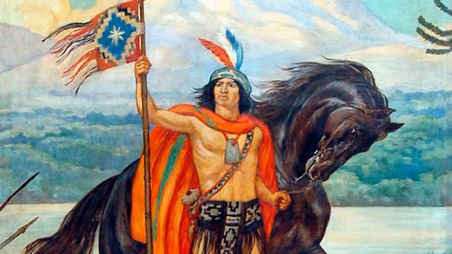
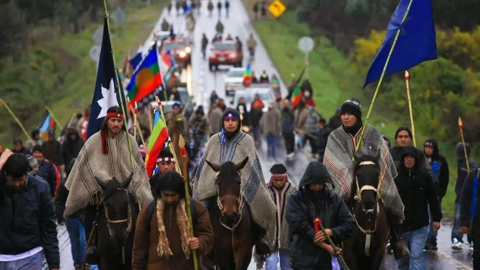

CONTEXTO
HISTORICO®
Es un juego basado en la cultura Mapuche
Los Mapuches, pueblo originario de Chile, resistieron la colonización española por más de 300 años. Fueron los últimos en someterse, defendiendo su cultura, territorio y autonomía con gran valentía.


Lautaro, un héroe
Líder mapuche, destacó como estratega en la resistencia contra los conquistadores españoles en Chile. Fue clave en las batallas, simbolizando la lucha por la libertad y autonomía indígena.
La actualidad
Hoy, los Mapuches mantienen su identidad cultural, luchando por el reconocimiento de derechos, tierras ancestrales y autonomía en Chile y Argentina, enfrentando desafíos sociales y políticos persistentes.
